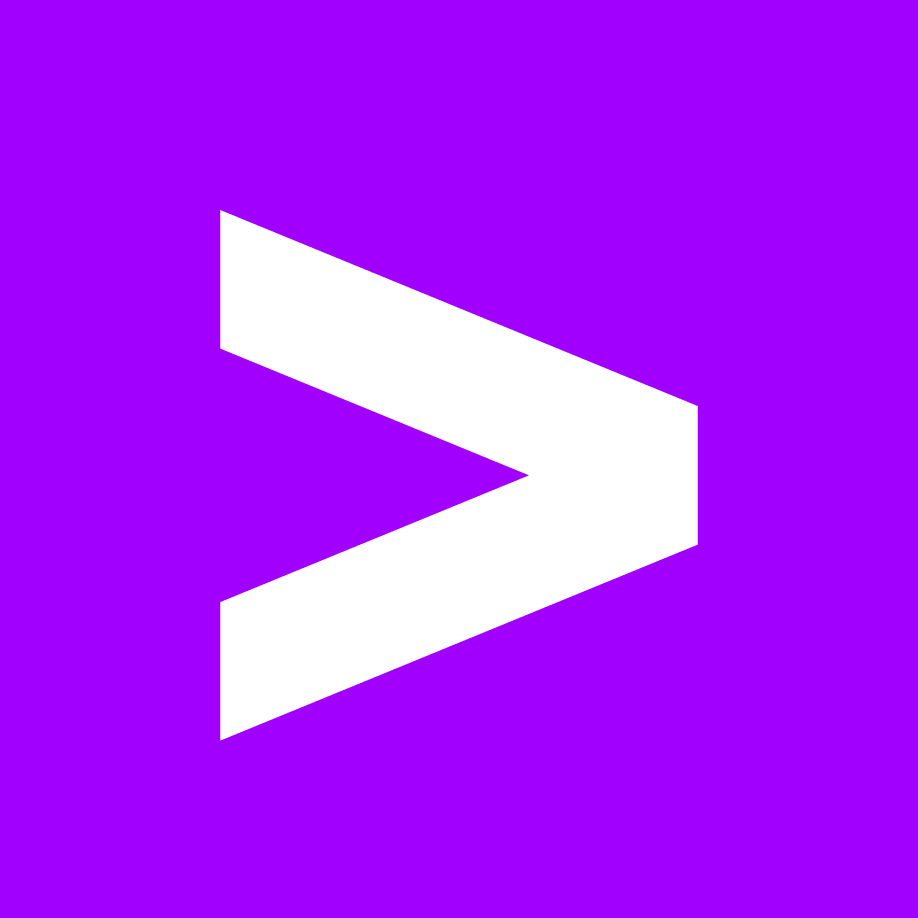
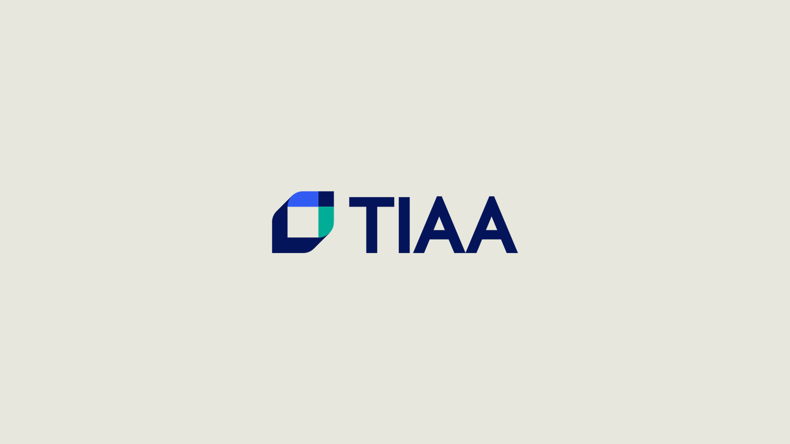
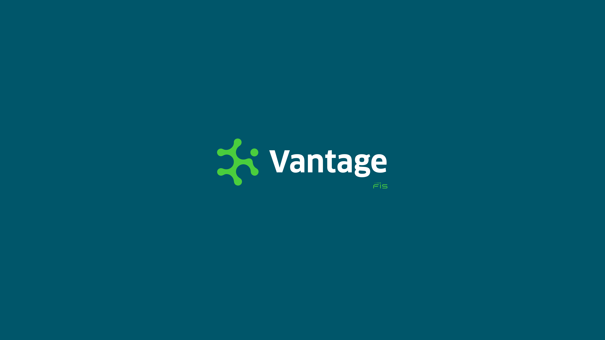
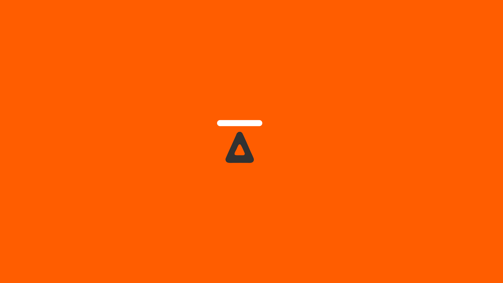
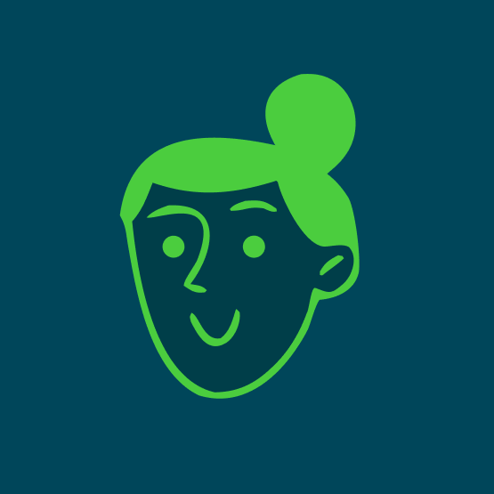
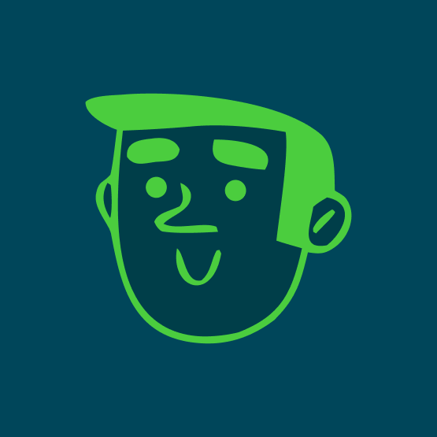
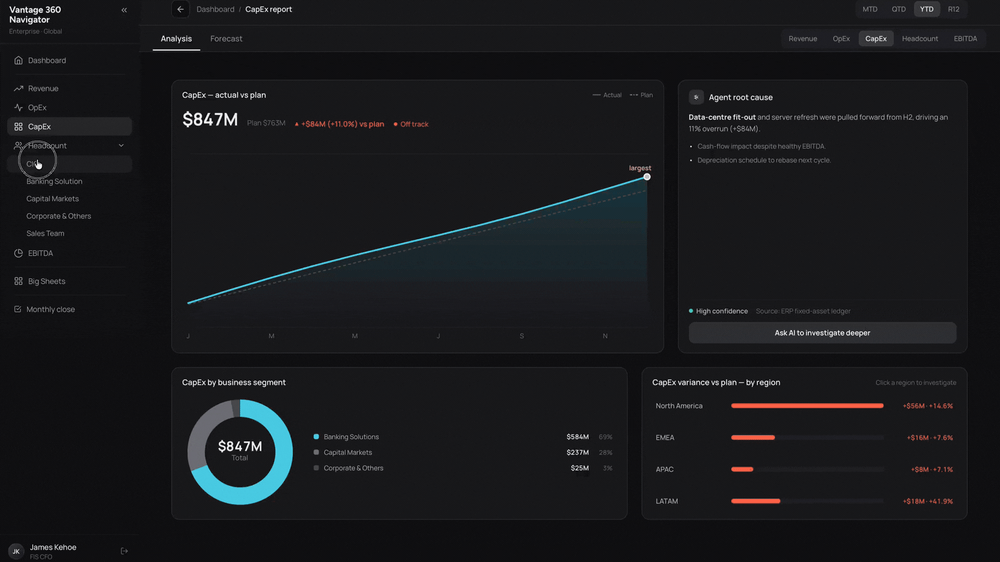
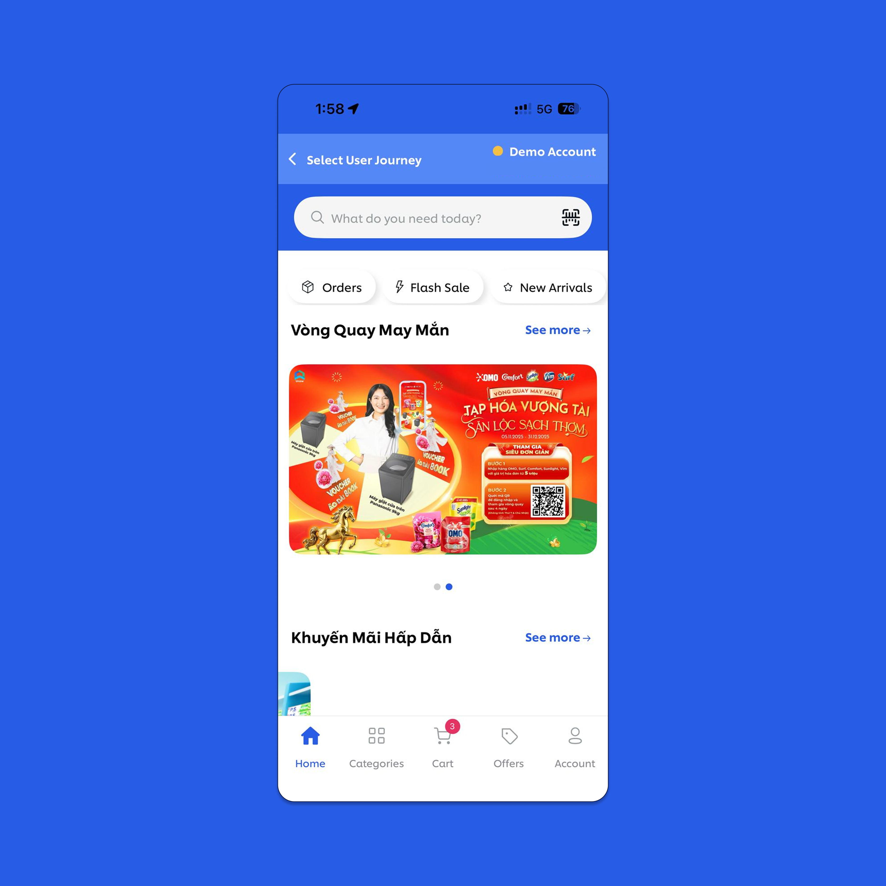
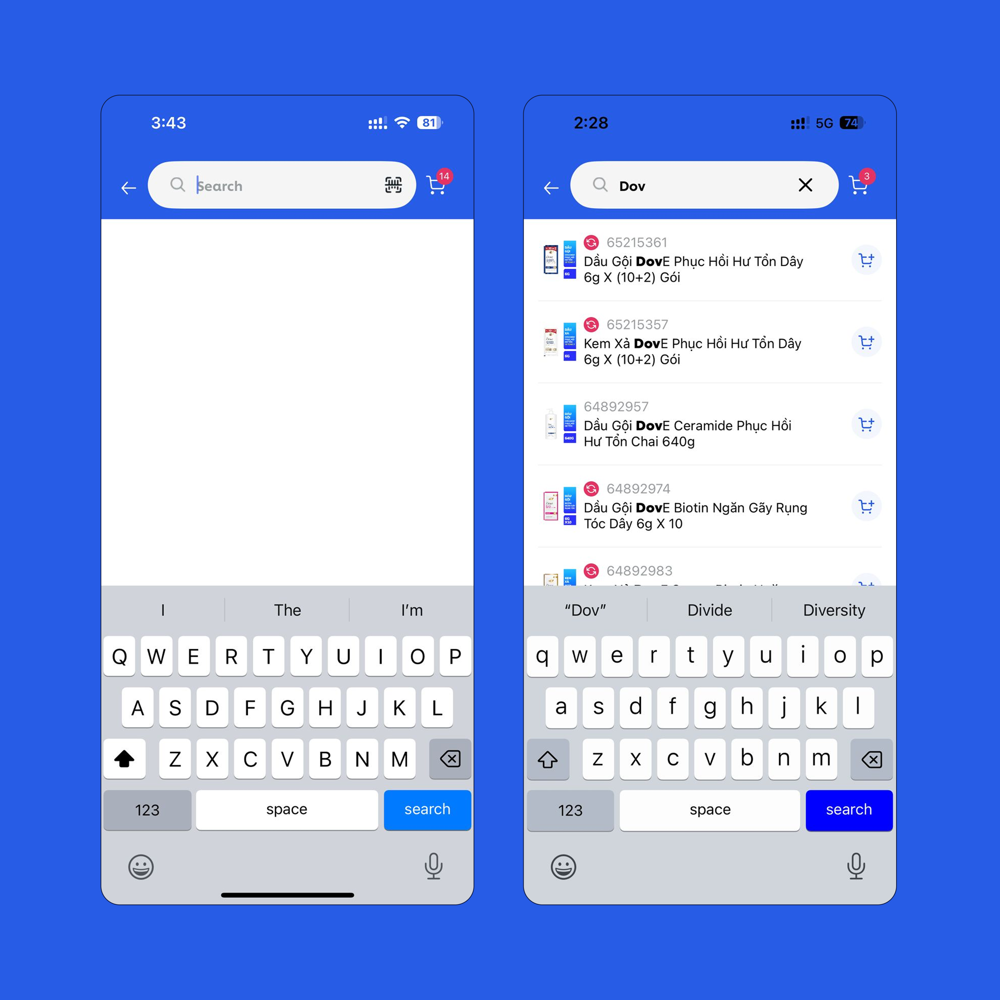
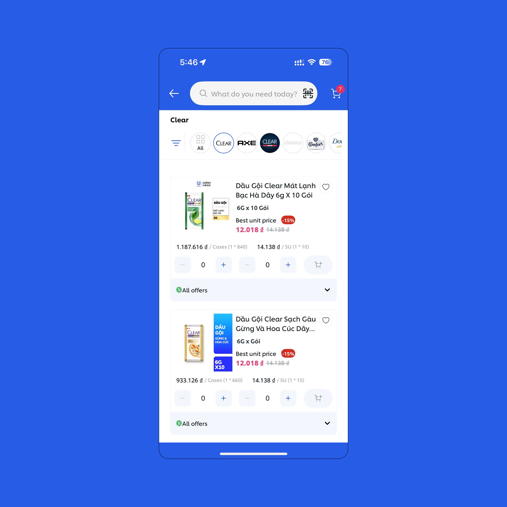

A digital Product Designer from Himachal, India weaving mindful designs for human connections.
Prev. Accenture Song
|
 |
Accenture Song/Interaction Designer | Present |
| Studio Carbon/Product Design Intern | 2024 |



Background
I'm a product & interaction designer focused on early product thinking in complex, data-rich enterprise and financial systems. I design AI-integrated and agentic product experiences — crafting secure, accessible, scalable interfaces while keeping human judgment in the loop where it matters.
Fluent in design articulation and systematic in execution — and always collecting odd little design-psychology facts about why people behave the way they do.

TIAA, Interaction Design
Building a UX testing process from nothing on a platinum financial client — three releases, 80+ screens, zero prior process.
If you'd like to learn more, please get in touch.
At TIAA, I sat offshore on a platinum Accenture Song engagement — closer to the build than the onshore design team, catching defects the day they were created. I became the de facto point of contact for developers, PMs, and product owners on all design quality questions.
The problem was structural: no UXT process existed. Design quality between handoff and deployment was everyone's responsibility — which meant it was no one's.
Which meant it was no one's.
I diagnosed five root causes across R1 and R2: no defined scope at kickoff, unclear stakeholder ownership, no shared defect language, no canonical Figma source of truth, and one person doing five jobs simultaneously.
Each cause had a concrete effect. Each effect had a fix I designed, documented, and got adopted.
Phase 1: UXT Kickoff — lock scope, timelines, and source of truth. Phase 2: Align with POCs — map all 36 capabilities releasing in R3 to named owners, take knowledge transfer. Only then: screen analysis, defect logging, Jira tickets, QA-ready sign-off.
I also authored a five-category defect taxonomy — design fidelity, design system compliance, UX copy, accessibility, responsive behavior. It gave the scrum master a shared language to triage and route every ticket without debate.
R1 (Discovery): Built the checklist from scratch. Logged 22 defects, none shipped. Ran the retro that surfaced the five gaps.
R2 (Consequence): Scope confusion meant wrong modules got tested. Built the kickoff doc mid-release in response. Introduced the defect taxonomy.
R3 (Maturity): Kickoff doc became standard practice. Ticket creation delegated. The process now outlasts any one person.
When a PM said "we don't have time," the taxonomy let me answer: this isn't a design preference, it's a product-quality standard. Functionality always ships first, so visual defects are structural, not incidental — which is exactly why the role exists.
Vantage 360 Navigator
A secure, access-controlled platform giving each persona streamlined, personalised access to firm-wide FP&A reporting — one intelligent hub for every metric deployed to date.
If you'd like to learn more, please get in touch.
FIS is a global fintech across four segments — Banking Solutions, Capital Markets, CIO Organisation and Corporate — each with its own finance team, P&L and reporting rhythm.
In 2025 their reporting lived in a fragmented Power BI landscape: dashboards spread across locations, teams losing time hunting for the right report, the same views served to everyone regardless of need, and heavy dependence on FP&A just to get access.
The organisation needed a more intelligent solution — a way to translate those Power BI reports into agentic AI dashboards tailored to each market.
The navigator centralised a fragmented reporting landscape into a single, persona-aware hub — with measurable business outcomes.
Three people, three relationships with the same data. Each opens the same navigator but uses it differently — different depth, frequency and questions.


The architectural shift: the AI runs on a schedule, not on demand. Four agents run every night after the ERP batch closes, so by 9am the analysis is already done. That's the difference between a dashboard with a chatbot and an agentic product — a chatbot waits to be asked; these agents do the work first.
A walkthrough of the product — from launch, into the morning dashboard, and down into a persona's drill-down.


Carma
A shipped B2B SaaS climate-risk platform — the insurer's toolkit for scalable agricultural insurance that de-risks smallholder farmers. Designed end-to-end as the MVP at Studio Carbon for Dutch agri-fintech Agtuall, in partnership with the Syngenta Foundation.
Shipped & live — agtuall.com/carma.
The final experience brought together the core workflows for exploring climate data, analysing datasets, and monitoring insurance products. The product was designed, tested, refined, and ultimately shipped.
Earth's temperature has risen roughly 0.06°C per decade since 1850 (NOAA). For smallholder farmers across East Africa and Bangladesh, a bad season isn't a data point — it's the line between getting by and going under.
Insurance should be that safety net. But pricing crop risk at this scale has been slow, manual, and starved of trustworthy data — so the farmers who need cover most are the hardest to insure.
Agtuall's vision is refreshingly human: de-risk smallholder farmers. It does that by giving insurers the data and tooling to build parametric insurance products profitably — even for farmers once considered uninsurable.
Carma is the platform underneath. It unifies weather, earth-observation and climate datasets into a single repository with analytics on top, so an insurer can move from raw climate data to a priced, monitored product without months of manual wrangling.
My biggest contribution was shaping the platform's backbone. We defined a five-level product architecture — Products → Modules → Sub-modules → Features → Flows — for what the team called the "Agtuall Engine."
The MVP centred on the Climate Data Library (Explore, Analytics, Inspect) plus Monitoring, with Pricing scoped for a later phase. Because Agtuall was a nascent startup still discovering its own product, architecting this took about two weeks and 5–6 rounds of close collaboration — design team and client figuring it out together.
The Agtuall team handed over epics and user stories; turning them into a coherent information architecture was the design job. Read closely, they told us why we were building, what, and the value each feature created.
Every story carried acceptance criteria that fed the product and information architecture directly — an actuary selecting a geography and up to four datasets to visualise trends, or evaluating dataset quality and consistency before committing to a product. Initiatives broke into epics, epics into stories, stories into the modules users actually navigate.
Before handoff, we ran moderated, think-aloud testing on the Climate Data Library with five actuaries — seasoned users the client connected us with, plus beginners — observing behaviour across real tasks like exploring rainfall data and comparing datasets.
Three findings shaped the redesign:
A genuinely multi-party project — a startup, a foundation, a design studio, and the actuaries who'd live in the product every day.
The users: financial institutions and their actuaries, data scientists and sales teams — the people pricing and selling insurance to farmers.
Unilever App · UX Audit
End-to-end UX audit of a retail FMCG mobile app in Vietnam's fast-growing e-commerce market — benchmarked against three regional competitors to surface experience gaps and give stakeholders a clear, prioritised path to improve the product.
If you'd like to learn more, please get in touch.
Unilever was scaling their app in Vietnam — a market with strong local competitors and established e-commerce habits. Before committing to a redesign, they needed an honest picture of where the app stood.
I was part of the team brought in to find what wasn't working and make sure every finding was backed by evidence, not opinion.
Built an audit framework across eight UX foundations — from information architecture to business alignment — giving every finding a clear business rationale, not just a design opinion.
Then benchmarked DDT across six core screens against three market competitors, covering over 100 screens across two user journeys.
View the full audit framework
A screen-by-screen audit mapping every problem to a competitive benchmark and a concrete recommendation — six core screens across both user journeys.



All six recommendations were accepted and implemented by the client. Because every finding traced back to competitive evidence and the audit framework's business-impact rationale, there was nothing to argue against.